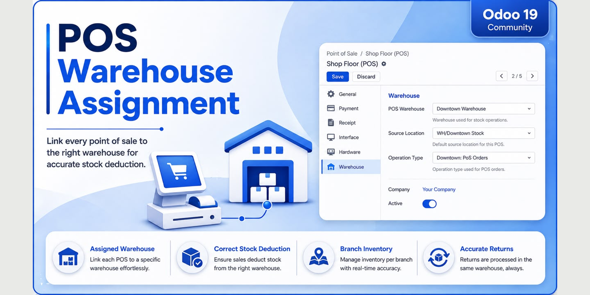
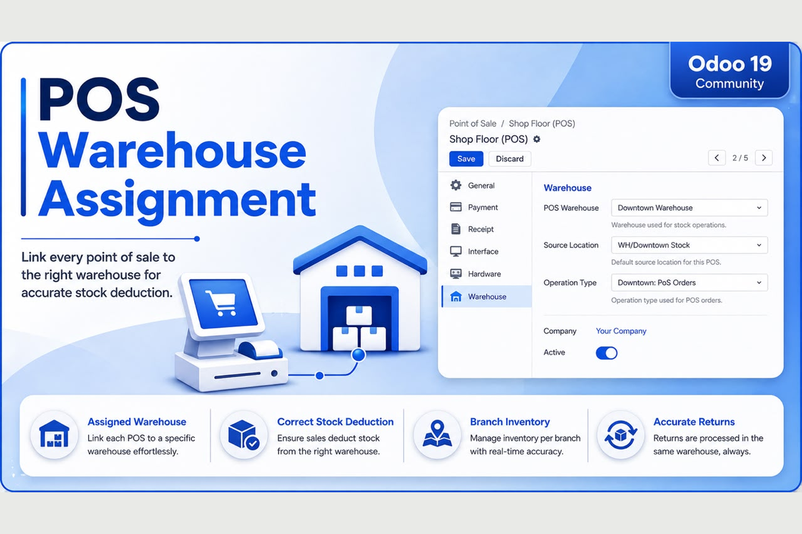

Assign an optional Sales Revenue Account to each Point of Sale configuration. When a sale is made and the session is closed, the product sales revenue is posted to the account of that Point of Sale instead of the product / product-category income account.
Priority for the product sales revenue line of the POS closing entry:
Only the revenue line is affected. Tax accounts, receivable/payment accounts, cash, bank, stock valuation, COGS, rounding and session-balance logic keep their standard behaviour, so every generated move stays balanced.
pos_sales_revenue_account folder into your addons path.Configuration: Settings → Point of Sale → Default Sales Revenue Account (optional, company-wide), and/or Point of Sale → Configuration → Point of Sale → open a POS → Accounting → Sales Revenue Account.
Compatible with Odoo 18 (Community Edition). Requires point_of_sale and
account.
Licence: LGPL-3 © Flous Flow